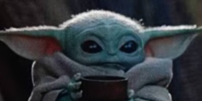
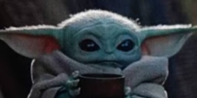
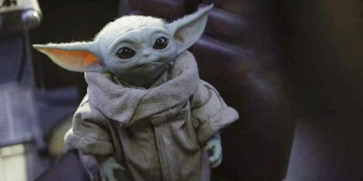
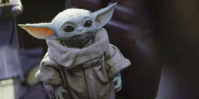

Din Djarin
Powszechnie znany jako „Mandalorianin” lub „Mando” w skrócie.
Pracował jako łowca nagród w erze Nowej Republiki.
Ze swoją mandaloriańską zbroją i charakterystycznym hełmem z beskaru,
Djarin był dość enigmatyczny - nieznajomy, którego przeszłość była dla innych owiana tajemnicą.
Osierocony w epoce Republiki, został wychowany jako podrzutek przez Children of the Watch,
kult, który oderwał się od głównego nurtu społeczeństwa Mandalorian.
Fakt ten był ukryty przed Djarinem, którego nauczono wierzyć,
że wszyscy Mandalorianie podążali za wierzeniami Dzieci Straży.
Został wyszkolony na mandaloriańskiego wojownika i ostatecznie dołączył do Plemienia,
które działało w tajemnicy na Nevarro i było powiązane z Dziećmi Straży.
Djarin stał się zaprawionym w bojach, człowiekiem niewielu słów i groźnym łowcą
w coraz bardziej niebezpiecznej galaktyce.

Grogu - Baby Yoda
Znany wielu po prostu jako „Dziecko” wrażliwe na Moc, które odnalazł Mandalorianin.
Należał do tego samego gatunku co Wielki Mistrz Jedi Yoda i Mistrz Jedi Yaddle.
Grogu urodził się w 41 roku BBY i wychował w świątyni Jedi na Coruscant.
Po tym jak przetrwał oblężenie Świątyni Jedi dziesiątki lat wcześniej
Grogu został ukryty w kryjówce prowadzonej przez najemników Nikto na Arvala-7
podczas ery Nowej Republiki, .
Jako niemowlę w wieku pięćdziesięciu lat był poszukiwany przez Moffa Gideona,
który wynajął mandaloriańskiego łowcę nagród Din Djarina, aby go dla niego zdobył.
Unknown Ice Planet
Odcinek 1 The Mandalorian rozpoczyna się na lodowej planecie,
gdzie Mando szuka swojego najnowszego celu - gadatliwego Mythrolu,
który na próżno próbuje uniknąć schwytania.
Po schwytaniu Mythrolu łowca nagród zostaje złapany w bitwie z dużym stworzeniem z kłami zwanym Ravinakiem,
który najwyraźniej jest zdolny do życia w lodzie i poruszania się przez niego niezauważenie.
Po pokonaniu stworzenia, Mandalorianin pozostawia za sobą lodową planetę.
Nazwa planety nigdy nie jest wymieniana z nazwy przez żadną z postaci w serialu.
Komentarz Mythrolu sugeruje, że planeta, jakkolwiek by się nie nazywała,
jest traktowana przez odwiedzających jak wysypisko śmieci.
Z pierwszego aktu Mandaloriańskiego odcinka 1 można wywnioskować,
że planeta jest w większości niegościnna.
Niskie temperatury i lód to tylko część problemu.
Jedna z postaci skanowała lód w poszukiwaniu Ravinaków,
co wskazuje, że te stworzenia nie są rzadkością i mogą występować na całej planecie.
Biorąc pod uwagę kłopoty Mando z jednym Ravinakiem, ich wielkość i siła sprawiają,
że stanowią zagrożenie dla każdego, kto odwiedza planetę.
Nevarro
Po opuszczeniu lodowej planety Mando używa grzebienia Razor's Crest,
aby polecieć na Nevarro, która jest jak dotąd najważniejszą planetą wprowadzoną
w The Mandalorian. Nevarro to miejsce ze skalistym i wulkanicznym terenem,
jest domem dla kilku różnych gatunków, co potwierdza fakt,
że Mando napotkał wiele różnych kosmitów na planecie.
Wizyty Mando w Nevarro ujawniły niektóre kluczowe lokalizacje planety.
Nevarro to miejsce, w którym Mando spotyka Greefa Kargę (Carl Weathers)
w kantynie i otrzymuje nagrodę za swoje zlecenia.
Wydaje się być też nową siedzibą Gildii Łowców Nagród,
frakcji o bogatej historii w uniwersum Gwiezdnych Wojen.
Ponadto Imperium mogło w pewnym momencie zająć Nevarro,
biorąc pod uwagę, że Klient (Werner Herzog), osoba,
która kiedyś pracowała dla Imperium, mieszka tam ze swoimi Szturmowcami.
Ich baza mogła wcześniej należeć do Imperium.
Trzecim interesującym miejscem na Nevarro jest enklawa Mandalorian,
która jest jak dotąd jedyną znaną kryjówką Mandalorian,
którzy przeżyli Wielką Czystkę.
Arvala-7
Trzecią nową planetą w The Mandalorian jest Arvala-7,
na którą Klient wysyła Mando w odcinku 1, aby znalazł Baby Yodę.
Na pierwszy rzut oka Arvala-7 można łatwo pomylić z Tatooine,
ponieważ również jest to pustynna planeta pełna Jawów.
Podczas pobytu na Arvala-7 Mando spotyka Kuiila (Nick Nolte),
który pomaga mu uratować Małego Yodę. Nigdy nie zbadano,
w jaki sposób Mały Yoda znalazł się w rękach najemników,
ale Kuill jasno wyjaśnił, że Arvala-7 stała się jaskinią złodziei,
bandytów, łowców nagród, najemników itp.
The Mandalorian daje widzom szansę spotkania rodzimych stworzeń Arvala-7.
Jednym z nich jest Mudhorn - duży, groźny potwór przypominający nosorożca włochatego.
Jego siła była tak wielka, że Mando zostałby zabity przez bestię,
gdyby nie pomoc Baby Yody i Mocy.
Sorgan
Sorgan jest scenerią czwartego odcinka Mandalorianina,
który zabiera łowcę nagród i Małego Yodę do wioski rybackiej na leśnej planecie,
gdzie mają nadzieję znaleźć bezpieczny port. Problem z planem Mando polega na tym,
że Cara Dune (Gina Carano), były szturmowiec,
wybrała już planetę jako swoje własne sanktuarium.
Niezależnie od tego Mando zostaje wystarczająco długo,
aby pomóc Cara Dune przygotować wieśniaków do bitwy z najeźdźcami z Klatooinian.
Po zakończeniu konfliktu Mando opuszcza Sorgan na dobre.
Niewiele ujawniono o Sorgan w odcinku 4, poza faktem,
że znajduje się on na Zewnętrznych Rubieżach iw dużej mierze pozostaje niezauważony
przez Gildię Łowców Nagród i to, co zostało z Imperium.


 

 
